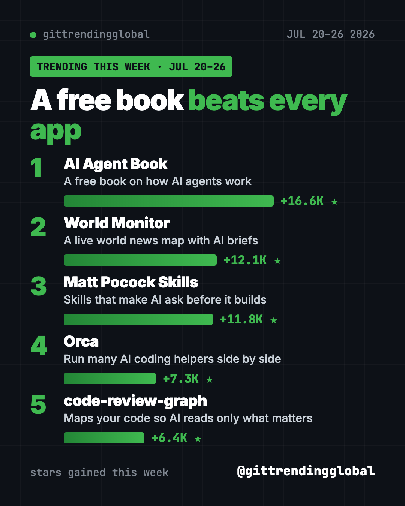
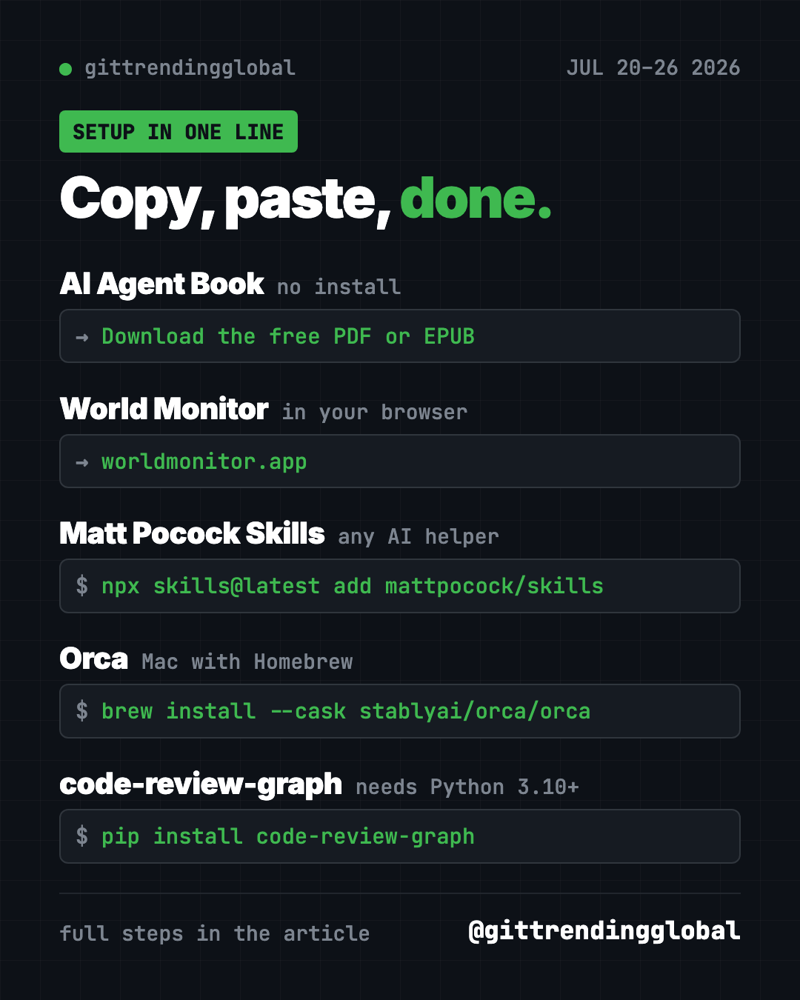

Home › Top repos › GitHub trending this week
Top Trending GitHub Repos July 20-26, 2026
- Top repos
- Published 2026-10-15
- 6 min read
- Updated 2026-10-16
- By the It's Trending Global team
The top trending GitHub repos July 20-26, 2026: a free book on AI agents, World Monitor, Matt Pocock's skills, Orca and code-review-graph, explained simply.
The top trending GitHub repos July 20-26, 2026 were led by a book, not an app. Bojie Li's free book on how AI agents work gained 16,600 stars. World Monitor, Matt Pocock's skills, Orca and code-review-graph filled out the top five.
That says a lot about where people's heads were. They didn't just want new AI tools this week. They wanted to understand how those tools think, and to see the world more clearly.
Key takeaways
- AI Agent Book is a free 10-chapter book, with 109 hands-on experiments, on how AI agents are built.
- World Monitor puts live world news, markets and events on one map, with short AI briefs.
- Matt Pocock's skills gained another +11.8K, after a big week just before.
- Orca keeps several AI coding helpers working side by side.
- code-review-graph maps your code so AI tools read only what matters.

This week at a glance
| Repo | Type | Best for | Stars this week | Setup |
|---|---|---|---|---|
| AI Agent Book | Free book with code | Anyone curious how AI agents work | +16.6K | None, read the PDF |
| World Monitor | Live news map | News junkies, traders, teachers | +12.1K | None, it's a website |
| Matt Pocock Skills | AI helper add-ons | People building with AI | +11.8K | One command |
| Orca | Desktop app | Users of several AI helpers | +7.3K | Download |
| code-review-graph | Code map for AI | Developers | +6.4K | Python 3.10+ |
Star gains are for July 20-26 only. Totals were checked on October 16, 2026.
1. AI Agent Book: learn how AI agents really work
Stars: +16.6K this week · about 54.4K total
What it is: A free, open-source book by Bojie Li, first written in Chinese. It's built around one simple formula: an agent is an AI model plus context plus tools. Ten chapters go from the basics to running agents in real products, with 109 experiments you can run. Volunteers have translated it into many languages, including English.
Who it's for: Students, product people and curious readers who want the "why," not just the "how."
Everyday use: Read one chapter on the train each day, then try its experiment at home.
Start it: No install. Download the free PDF or EPUB from the README, or read it online.
Or ask your AI helper:
Using the AI Agent Book at github.com/bojieli/ai-agent-book, explain chapter 1 to me in plain English with one everyday example.
💡 Tip: The English edition is a community translation. If something reads oddly, the original Chinese PDF is the source of truth.
2. World Monitor: the whole world on one map
Stars: +12.1K this week · about 88.5K total
What it is: A free, live dashboard of world news. It puts headlines, markets, disasters and flights on one globe, and AI turns the flood of news into short briefs.
Who it's for: Anyone who wants the big picture in five minutes, from students to traders.
Everyday use: Check one map each morning instead of ten news sites.
Start it: Open worldmonitor.app in your browser. Desktop apps for Windows, Mac and Linux are on the Releases page.
Or ask your AI helper:
Run World Monitor locally from github.com/koala73/worldmonitor and tell me which data sources need keys.
See World Monitor on GitHub · Read our full guide

3. Matt Pocock Skills: back for more
Stars: +11.8K this week · about 292.6K total
What it is: Free skill files that make AI coding helpers ask before they build and test their own work.
Everyday use: Let the AI interview you about a new feature before it codes.
Install it in Cursor, OpenCode and other helpers. Copy and paste this:
npx skills@latest add mattpocock/skills
Or ask your AI helper:
Install Matt Pocock's skills from github.com/mattpocock/skills and show me which one to use when I start a new feature.
See Matt Pocock Skills on GitHub · Read our full guide
4. Orca: run your AI helpers side by side
Stars: +7.3K this week · about 93.3K total
What it is: A free desktop app that runs Codex, Claude Code, OpenCode or Pi at the same time. Each one works in its own copy of the project. It was on our list two weeks earlier too.
Everyday use: Ask two AI helpers to fix the same bug, then keep the better fix.
Install it. Download it from onorca.dev, or on a Mac with Homebrew, copy and paste this:
brew install --cask stablyai/orca/orca
Or ask your AI helper:
Install Orca from github.com/stablyai/orca and set up Claude Code and Codex in two side-by-side worktrees.
5. code-review-graph: point AI at what matters
Stars: +6.4K this week · about 32.2K total
What it is: A free tool that builds a map of your code and keeps it up to date. When you change something, AI tools can see what else it touches, without re-reading the whole project. It works with Claude Code, Codex, Cursor and many others.
Who it's for: Developers who want sharper, cheaper AI code reviews.
Everyday use: Before you share a change, ask the AI what else it might break.
Install it. You need Python 3.10 or newer. Copy and paste this:
pip install code-review-graph
code-review-graph install
code-review-graph build
Or ask your AI helper:
Install code-review-graph from github.com/tirth8205/code-review-graph, build the graph, and review my latest change.
See code-review-graph on GitHub
Which one should you try first?
- You want to understand AI: AI Agent Book. It's free to read.
- You want the news in one glance: World Monitor.
- You build with AI: Matt Pocock Skills.
- You use more than one AI helper: Orca.
- You review code: code-review-graph.
Not technical at all? Start with the book or World Monitor. Neither needs any setup.
Zoom out with the top GitHub repos of July 2026 and July 2026 in AI news. Next up: the week of July 27.
FAQ
What were the top trending GitHub repos July 20-26, 2026?
The free AI Agent Book led with about 16,600 new stars. World Monitor, Matt Pocock Skills, Orca and code-review-graph followed.
Is the AI Agent Book available in English?
Yes. The README links a free English PDF and EPUB. They're community translations of the Chinese original.
Is World Monitor free?
Yes. The website is free to open, and the code is open source under the AGPL-3.0 license.
Which of these are good GitHub AI projects for beginners?
The AI Agent Book is the best start. It explains the ideas first, then gives you small experiments to run.
Want a new free tool explained every day? Follow ITG Now on Instagram.
Keep reading

Trending GitHub Repos October 2026: The Top 5 So Far
The trending GitHub repos of October 2026 so far: a free Photoshop-style editor, an AI art studio, a big AI model for gaming PCs and more, explained.

Trending GitHub Repos This Week, Oct 5 2026: The Top 5
Trending GitHub repos this week Oct 5 2026: Matt Pocock's skills, the openGym workout tracker, e2e testing, HyperFrames video and claude-mem memory.

GitHub Trending September 28, 2026: Hindsight and Paperclip
GitHub trending September 28 2026: Hindsight, Paperclip, NVIDIA's OpenShell and a free 542-lesson AI course, with setup steps for each.